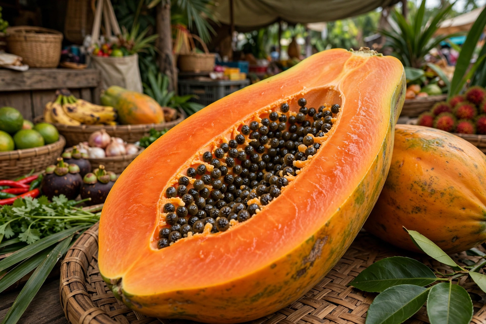

Papaya
From Wikipedia, the free encyclopedia

The papaya (Carica papaya) is a fast-growing, soft-wooded treelet of Central America whose large melon-like berries ripen from green through yellow to deep orange, with sweet, musky flesh and a central cavity of peppery black seeds. Spanish and Portuguese sailors spread it around the tropics within decades of contact, and it is now a staple fruit of the tropics worldwide, eaten ripe for breakfast, green and shredded in salads such as Thai som tam, and cooked in curries. The milky latex of the unripe fruit yields papain, a protein-digesting enzyme sold as meat tenderiser and used in medicine and brewing.
The Rainbow rescue
Hawaii's papaya industry was nearly destroyed in the 1990s by papaya ringspot virus, for which no spray or resistant conventional variety existed. Plant pathologists developed transgenic varieties — 'Rainbow' and 'SunUp' — carrying a piece of the virus's own coat-protein gene, released in 1998; the industry recovered, and Rainbow became the canonical case study in debates over genetically modified food: celebrated as biotechnology saving a crop, contested by some export markets, and still the backbone of Hawaiian production. Most papaya trees sold commercially are hermaphrodites, whose elongated fruits pack best.
Uses
Ripe papaya is breakfast fruit across the tropics, juiced, dried and candied; unripe papaya goes into Filipino atchara pickles, Indonesian curries and the fiery som tam of Thailand and Laos, where it is pounded with lime, chilli, fish sauce and peanuts. The seeds, often discarded, are edible and taste like nasturtium or weak horseradish. Papain's tenderising power explains the folk practice of wrapping tough meat in papaya leaves, and the enzyme is used to chill-proof beer and debride wounds. Papaya leaves and latex also carry a folk-medicine afterlife in dengue treatment, where evidence remains thin.